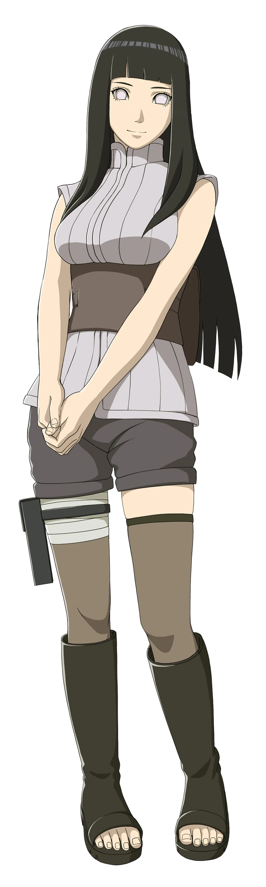
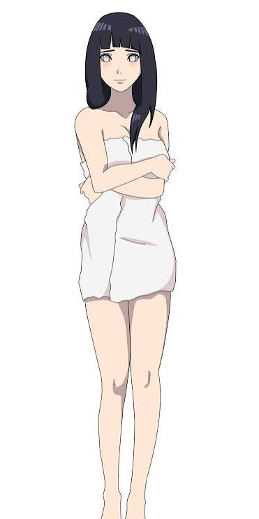

01 · Personal perspective
Why I Admire Her
Editable placeholder: add your personal words about Hinata here.
A personal reflection


Beyond the gentle light
01 · Personal perspective
Editable placeholder: add your personal words about Hinata here.
02 · Existing reflection
Hinata's journey offers a chance to think about courage, persistence, and finding confidence in your own way.
What helps you take a step forward when you feel unsure of yourself?
03 · Personal perspective
Editable placeholder: add your personal reflection here.